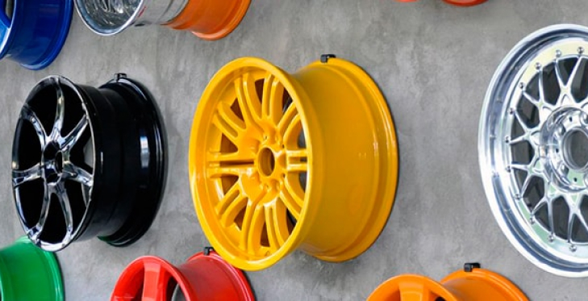
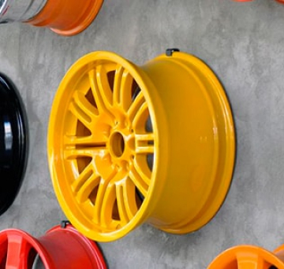

Технология порошкового окрашивания
Порошковая покраска является современным методом обработки металлических конструкций и изделий из других материалов, который позволяет получать полимерные покрытия, имеющие высокие защитные и декоративные свойства. Эта технология покраски была придумана в середине прошлого столетия, и за более 60 лет она стала отличной альтернативой применения жидких лакокрасочных веществ.
 Базовая технология порошковой окраски металла состоит из трех основных этапов:
- Подготовка поверхности к покраске (включает удаление загрязнений и окислов, обезжиривание и фосфатирование для повышения адгезии и защиты изделия от коррозии). Обычно на этом этапе осуществляется обезжиривание, травление и фосфатирование поверхностей. Обязательным условием является обезжиривание, которое можно выполнить с помощью органических растворителей;
- Нанесение слоя порошковой краски на окрашиваемую поверхность в камере напыления. Обычно для этих целей применяют электростатическое напыление, суть которого заключается в придании порошку электростатических зарядов;
- Оплавление и полимеризация порошкового покрытия в печи полимеризации. Формирование пленки покрытия. Охлаждение и отвержение краски. После того как на поверхность нанесли порошковую краску, детали или конструкции помещаются в печь, где выдерживаются 12-15 минут при высокой температуре (от 180 до 200 °С). Под действием высокой температуры порошок плавится и равномерно распределяется по всей площади поверхности, после чего полимеризуется и образует тонкое, но очень прочное покрытие.
Заключение:
Прочитав всё вышесказанное, можно сделать вывод , что технология порошковой покраски является наиболее эффективным и быстрым методом нанесения полимерных покрытий на различные поверхности, при этом можно обрабатывать изделия любой формы и размеров, получая красивое и долговечное защитное покрытие.
Предприятие предоставляет высочайший уровень качества полимерного порошкового напыления в электростатическом поле, который достигается использованием современного окрасочно-сушильного оборудования, при тщательном соблюдении технологического процесса.